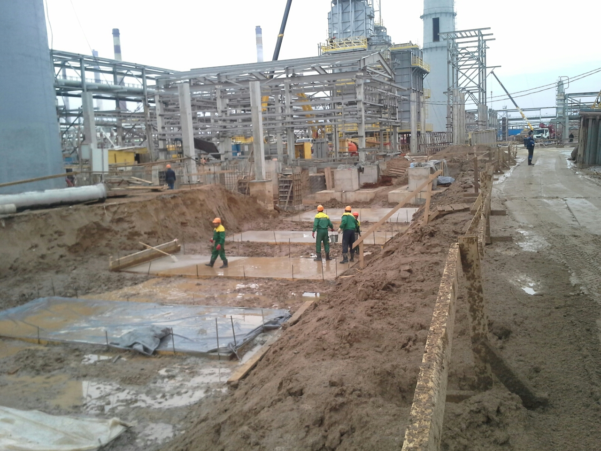

                <section class="common-section object-section select_fanc">
            <div class="common-white-wrap">
                <h1 class="object-title">Комплекс производства бензина для КИНЕФ в г.Кириши</h1>
                <div class="galleria-wrap">
                    <div class="fotorama" data-fit="cover" data-width="1600"
                         data-arrows="true" data-ratio="18/9"
                         data-max-width="100%" data-nav="thumbs"
                         data-thumbheight="64" data-allowfullscreen="true">
                                                    
                                            </div>
                </div>
                <div class="additional-content-wrap">
                    <p><strong>Сдача объекта:</strong><br/> февраль 2016 г.</p>
                    <p><strong>Общая площадь:</strong><br/>1500&nbsp;м²</p>
                    <p><strong>Адрес:</strong><br/> г. Кириши, ш. Энтузиастов 1</p>
                </div>
                <div class="main-content-wrap">
                    <p>В г. Кириши компания Адамант-Строй осуществила строительство комплекса производства высокооктановых компонентов бензина с подключением объекта к сетями и коммуникациям действующего завода по глубокой переработке нефти.</p>
                </div>
            </div>
        </section>
    